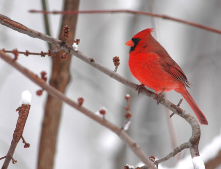

Help the National Audubon Society identify and count wild birds aspart of the Christmas Bird Count this winter. Join morethan 50,000 birdwatchers across North America (amateurs welcome!)in this annual event that's been going on for more than 100years.
The Christmas Bird Count is conducted from Dec. 14 to Jan. 5 everyyear. Organized groups spend a day counting birds in assigned,15-mile-diameter circles. Inexperienced observers are paired withveteran birders to help keep the count accurate.
The totals collected by volunteers provide a snapshot of winterbird populations. Biologists use the data to study variations inbird populations as well as the underlying environmental reasonsbehind those changes. For example, biologists have discovered thatmourning doves are expanding their range north into the UnitedStates and Canada. One of several factors behind that change may beincreasingly warm winter temperatures.
John Stuart has been participating in the Christmas Bird Count for30 years. He lives in Washington state, about an hour from theCanadian border, and says that each year the count in his arearecords 65 to 75 species. 'The counts are done in a scientificmanner, but it's just a whole lot of fun,' Stuart says. 'You get acarload of people, and you go out and drink your coffee and countbirds all day. It's a great social event.'
To get involved this winter, contact yourlocalAudubon chapter.
More Birdwatching Resources
GreatBackyard Bird Count
Feb. 16 to 19, 2007
Open to birders of all experience levels.
ProjectFeederwatch
November to April
Count birds at home or as a classroom project.
eBird
Year-round
Resources for managing data for experienced birders.
|
 |
|
|